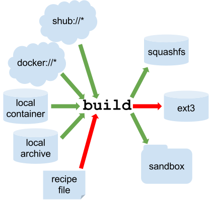

Singularity
Source Sylabs Inc.
Why the name “Singularity”?
A “Singularity” is an astrophysics phenomenon in which a single point becomes infinitely dense. This type of a singularity can thus contain massive quantities of universe within it and thus encapsulating an infinite amount of data within it.
Build from Recipe
Do you need administrator privileges to use Singularity?
You generally do not need admin/sudo to use Singularity containers but you do however need admin/root access to install Singularity and for some container build functions (for example, building from a recipe, or a writable image).
The Recipe File
Bootstrap let's us know that we are using a container from dockerhub to build off of. This should be similar to the Dockerfile from docker. Most of this should be self explainatory.
Bootstrap: docker
From: ubuntu:18.04
%help
This is where you can add some useful info.
%labels
Creator Ben
%environment
export MY_VAR='~~~~~some environment variable~~~~~'
%files
test.py /
%post
apt-get -qq -y update
apt-get -qq -y install python > /dev/null
%runscript
python /test.py
test.py:
import os
if __name__ == '__main__':
print('import os module and clearly python is installed!')
print(os.environ['MY_VAR'])
Sections in recipe file:
- help: Give some help
- labels: Impart meta-data into container
- environment: Environment variables
- files: Copy files into container
- post: Run commands once container is created
- runscript: A command to run by default
Build Images from Scratch
Use this command to build the recipe file into a *.simg
sudo singularity build ubuntu.simg Singularity.recipe
Here the "ubuntu.simg singularity.recipe" part of the command is "<image-name>.simg <recipe-file-name>.recipe"
You can build from multiple sources and even create interactive containers that you can add to. We will cover these soon, but here is a picture illustrating the many sources for singularity containers:

Red arrows represent operations that must be carried out with root privileges. Also I believe looking at the documentation that --writable and --sandbox containers are now 1 type singularity v3+. The difference is that you can either a
--writableor nonwritablesandbox.
Interactive Builds
Singularity v3.0 and above produces immutable images in the Singularity Image File (SIF) format. This ensures reproducible and verifiable images and allows for many extra benefits such as the ability to sign and verify your containers. However, during testing and debugging you may want an image format that is writable. This way you can shell into the image and install software and dependencies until you are satisfied that your container will fulfill your needs. For these scenarios, Singularity also supports the sandbox format (which is really just a directory).
Let's say I start with ubuntu:
singularity build ubuntu.simg docker://ubuntu:latest
bbearce@pop-os:~/$ ls
ubuntu.simg
Now this is read only and can just be run or you can shell into it:
bbearce@pop-os:~/$ singularity shell ubuntu.simg
Singularity> ls
ubuntu.simg
Notice that since the user's home directory is automatically mounted it shows the *.simg with ls.
Watch as writing anything triggers an error:
Singularity> touch anything.txt
Singularity> ls
anything.txt ubuntu.simg
How come that worked? Well the mounted home directories are considered outside the container and you can read and write to those. Let's try again in /mnt:
Singularity> touch /mnt/anything.txt
touch: cannot touch '/mnt/anything.txt': Read-only file system
ahhh, there we go. So how do we write inside a singularity container?
Enter the --sandbox
First we have to create a sandbox out of the original container:
bbearce@pop-os:~/$ singularity build --sandbox s_ubuntu ubuntu.simg
INFO: Starting build...
INFO: Creating sandbox directory...
INFO: Build complete: s_ubuntu
Notice how we build it out of the original *.simg container we had. You can base a sandbox on shub or dockerhub images as well.
so let's see what is inside:
bbearce@pop-os:~/$ ls s_ubuntu/
bin etc lib64 opt sbin tmp
boot home libx32 proc singularity usr
dev lib media root srv var
environment lib32 mnt run sys
An entire ubuntu os! Cool so now let's change stuff in it:
bbearce@pop-os:~/$ singularity shell s_ubuntu
Singularity> touch /mnt/anything.txt
touch: cannot touch '/mnt/anything.txt': Read-only file system
So even though we made a sandbox which is desinged to be interactive, we still need the --writable flag.
bbearce@pop-os:~/$ singularity shell --writable s_ubuntu
Singularity> touch /mnt/anything.txt
Singularity> ls /mnt
anything.txt
We did it! Ok now how do we make this change into a new container:
bbearce@pop-os:~/$ singularity build s_ubuntu_modified s_ubuntu
INFO: Starting build...
INFO: Creating SIF file...
INFO: Build complete: s_ubuntu_modified
bbearce@pop-os:~/$ ls
s_ubuntu_modified ubuntu.simg
s_ubuntu
Now let's see if our change made it:
bbearce@pop-os:~/$ singularity shell s_ubuntu_modified
Singularity> ls /mnt
anything.txt
Boom! So to recap, you need to build a --sandbox image from just about any image source, be it a hub or recipe file. Then shell into that container directory with flag --writable.
Run
Continue from the Build section above with files test.py and Singularity.recipe.
Run the image with run:
bbearce@pop-os:~/$ singularity run ubuntu.simg
import os module and clearly python is installed!
~~~~~some environment variable~~~~~
or treat as an executable:
bbearce@pop-os:~/$ ./ubuntu.simg
import os module and clearly python is installed!
~~~~~some environment variable~~~~~
run also works with shub:// and docker:// URIs. This creates an ephemeral container that runs and then disappears.
$ singularity run shub://GodloveD/lolcow
Files on the host are reachable from within the container.
$ echo "Hello World" > $HOME/hello-kitty.txt
$ singularity exec vsoch-hello-world-master.simg cat $HOME/hello-kitty.txt
Hello World
This example works because hello-kitty.txt exists in the user’s home directory. By default singularity bind mounts
/home/$USER,/tmp, and$PWDinto your container at runtime.
Mounting
You can specify additional directories to bind mount into your container with the --bind option. In this example, the /data directory on the host system is bind mounted to the /mnt directory inside the container.
$ echo "I am your father" >/data/vader.sez
$ ~/sing-dev/bin/singularity exec --bind /data:/mnt hello-world.simg cat /mnt/vader.sez
I am your father
Inspect
Look at meta-data with inspect. Notice the %labels sections details shows up under "CREATOR": "Ben"
bbearce@bryce:~/singularity$ singularity inspect ubuntu.simg
{
"org.label-schema.usage.singularity.deffile.bootstrap": "docker",
"org.label-schema.usage.singularity.deffile": "singularity.recipe",
"org.label-schema.usage": "/.singularity.d/runscript.help",
"org.label-schema.schema-version": "1.0",
"CREATOR": "Ben",
"org.label-schema.usage.singularity.deffile.from": "ubuntu:18.04",
"org.label-schema.build-date": "Tue,_04_Feb_2020_15:36:00_-0500",
"org.label-schema.usage.singularity.runscript.help": "/.singularity.d/runscript.help",
"org.label-schema.usage.singularity.version": "2.5.2-dist",
"org.label-schema.build-size": "135MB"
}